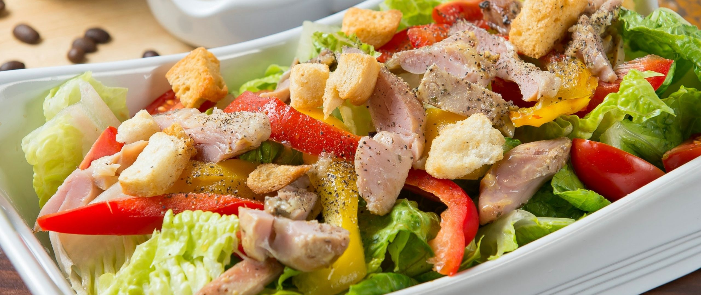

ria
ria
La Pizzerias Pizza is the highest rated pizza in the world. Pizza is a savory dish of Italian origin
consisting of a usually round, flattened base of leavened wheat-based dough topped with tomatoes,
cheese,
and often various other ingredients, which is then baked at a high temperature, traditionally in a
wood-fired oven. A small pizza is sometimes called a pizzetta.
La Pizzerias Caesar Salad is the fanciest, best salad of all time. A Caesar salad
is a
green salad of romaine lettuce and croutons dressed with lemon juice, olive oil, egg, Worcestershire
sauce,
anchovies, garlic, Dijon mustard, Parmesan cheese, and black pepper. In its original form, this
salad
was
prepared and served tableside.

La Pizzerias Fettuccine Alfredo or fettuccine al burro is an Italian pasta dish of fresh fettuccine
tossed
with
butter and Parmesan cheese. Fettuccine Alfredo or fettuccine al burro is an Italian pasta dish of fresh
fettuccine tossed with butter and Parmesan cheese. As the cheese melts, it emulsifies the liquids to
form a
smooth and rich sauce coating the pasta.
© La Pizzeria is certified kosher.